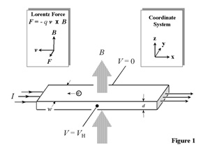
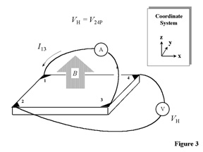

II. The Hall EffectEvolution of Resistance Concepts Evolution of Resistance ConceptsElectrical characterization of materials evolved in three levels of understanding. In the early 1800s, the resistance R and conductance G were treated as measurable physical quantities obtainable from two-terminal I-V measurements (i.e., current I, voltage V). Later, it became obvious that the resistance alone was not comprehensive enough since different sample shapes gave different resistance values. This led to the understanding (second level) that an intrinsic material property like resistivity (or conductivity) is required that is not influenced by the particular geometry of the sample. For the first time, this allowed scientists to quantify the current-carrying capability of the material and carry out meaningful comparisons between different samples. By the early 1900s, it was realized that resistivity was not a fundamental material parameter, since different materials can have the same resistivity. Also, a given material might exhibit different values of resistivity, depending upon how it was synthesized. This is especially true for semiconductors, where resistivity alone could not explain all observations. Theories of electrical conduction were constructed with varying degrees of success, but until the advent of quantum mechanics, no generally acceptable solution to the problem of electrical transport was developed. This led to the definitions of carrier density n and mobility µ (third level of understanding) which are capable of dealing with even the most complex electrical measurements today. The Hall Effect and the Lorentz ForceThe basic physical principle underlying the Hall effect is the Lorentz force. When an electron moves along a direction perpendicular to an applied magnetic field, it experiences a force acting normal to both directions and moves in response to this force and the force effected by the internal electric field. For an n-type, bar-shaped semiconductor shown in Fig.1, the carriers are predominately electrons of bulk density n. We assume that a constant current I flows along the x-axis from left to right in the presence of a z-directed magnetic field. Electrons subject to the Lorentz force initially drift away from the current line toward the negative y-axis, resulting in an excess surface electrical charge on the side of the sample. This charge results in the Hall voltage, a potential drop across the two sides of the sample. (Note that the force on holes is toward the same side because of their opposite velocity and positive charge.) This transverse voltage is the Hall voltage VH and its magnitude is equal to IB/qnd, where I is the current, B is the magnetic field, d is the sample thickness, and q (1.602 x 10-19 C) is the elementary charge. In some cases, it is convenient to use layer or sheet density (ns = nd) instead of bulk density. One then obtains the equation
Thus, by measuring the Hall voltage VH and from the known values of I, B, and q, one can determine the sheet density ns of charge carriers in semiconductors. If the measurement apparatus is set up as described later in Section III, the Hall voltage is negative for n-type semiconductors and positive for p-type semiconductors. The sheet resistance RS of the semiconductor can be conveniently determined by use of the van der Pauw resistivity measurement technique. Since sheet resistance involves both sheet density and mobility, one can determine the Hall mobility from the equation
If the conducting layer thickness d is known, one can determine the bulk resistivity (r = RSd) and the bulk density (n = nS/d). The van der Pauw TechniqueIn order to determine both the mobility µ and the sheet density ns, a combination of a resistivity measurement and a Hall measurement is needed. We discuss here the van der Pauw technique which, due to its convenience, is widely used in the semiconductor industry to determine the resistivity of uniform samples (References 3 and 4). As originally devised by van der Pauw, one uses an arbitrarily shaped (but simply connected, i.e., no holes or nonconducting islands or inclusions), thin-plate sample containing four very small ohmic contacts placed on the periphery (preferably in the corners) of the plate. A schematic of a rectangular van der Pauw configuration is shown in Fig. 2. The objective of the resistivity measurement is to determine the sheet resistance RS. Van der Pauw demonstrated that there are actually two characteristic resistances RA and RB, associated with the corresponding terminals shown in Fig. 2. RA and RB are related to the sheet resistance RS through the van der Pauw equation
which can be solved numerically for RS. The bulk electrical resistivity r can be calculated using
To obtain the two characteristic resistances, one applies a dc current I into contact 1 and out of contact 2 and measures the voltage V43 from contact 4 to contact 3 as shown in Fig. 2. Next, one applies the current I into contact 2 and out of contact 3 while measuring the voltage V14 from contact 1 to contact 4. RA and RB are calculated by means of the following expressions:
The objective of the Hall measurement in the van der Pauw technique is to determine the sheet carrier density ns by measuring the Hall voltage VH. The Hall voltage measurement consists of a series of voltage measurements with a constant current I and a constant magnetic field B applied perpendicular to the plane of the sample. Conveniently, the same sample, shown again in Fig. 3, can also be used for the Hall measurement. To measure the Hall voltage VH, a current I is forced through the opposing pair of contacts 1 and 3 and the Hall voltage VH (= V24) is measured across the remaining pair of contacts 2 and 4. Once the Hall voltage VH is acquired, the sheet carrier density ns can be calculated via ns = IB/q|VH| from the known values of I, B, and q. There are practical aspects which must be considered when carrying out Hall and resistivity measurements. Primary concerns are (1) ohmic contact quality and size, (2) sample uniformity and accurate thickness determination, (3) thermomagnetic effects due to nonuniform temperature, and (4) photoconductive and photovoltaic effects which can be minimized by measuring in a dark environment. Also, the sample lateral dimensions must be large compared to the size of the contacts and the sample thickness. Finally, one must accurately measure sample temperature, magnetic field intensity, electrical current, and voltage.
| Main Page | I. Introduction | II. The Hall Effect | evolution of resistance concepts |
NIST is an agency of the U.S. Commerce Department's Technology Administration. Date created: 12/4/2000 |